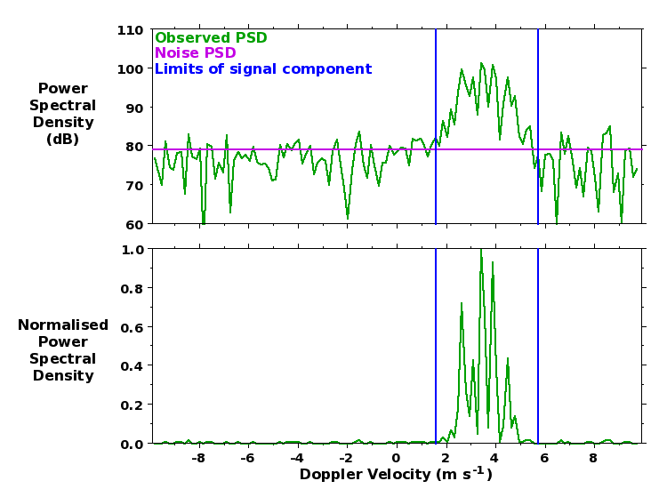
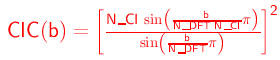
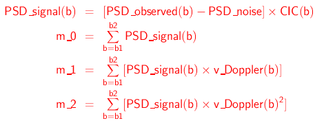
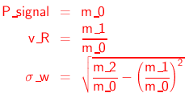
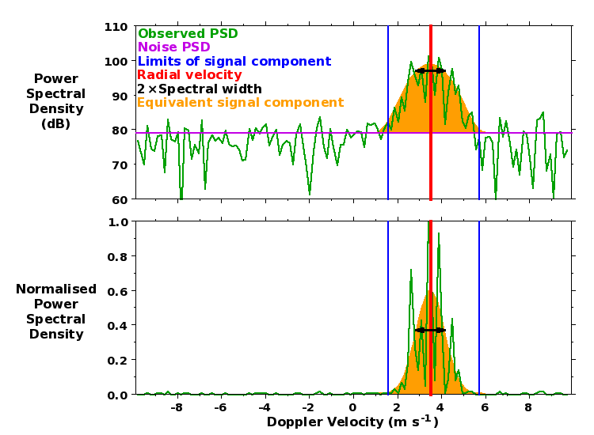

The figure below shows a typical Doppler spectrum observed by the NERC
MST Radar. Power Spectral Densities (PSDs) are shown in both log
(i.e. dB) and self-normalised linear units as each panel emphasises
slightly different features. They are stored in dB units in the
spectral files (PSD_dB) but must be
converted into linear units (PSD_linear_units) before processing is carried
out:
PSD_dB = 10.0 * log10(PSD_linear_units)
PSD_linear_units = 10.0^(PSD_dB/10.0)
Positive values of Doppler velocity imply motion away from the
radar. The number of velocity bins within a spectrum is given in the
spectral and radial data files by by the variable number_of_complex_samples_in_discrete_fourier_transform,
abbreviated here as N_DFT. Velocity bin
numbers (b) run from (-N_DFT/2) to (N_DFT/2
- 1). The corresponding Doppler velocity values (v_Doppler), which are stored by the spectral
file variable doppler_velocity, are
given by:
v_Doppler(b) = b * delta_v_Doppler
where the spacing between velocity bins (delta_v_Doppler) is stored by the radial file
variable spectral_velocity_bin_spacing.
Note that spectra are cyclic about the Nyquist velocity, i.e. about
velocity bin (-N_DFT/2).
Observed spectra typically consist of a single (quasi-Gaussian) radar
return signal component (although there are sometimes additional
signal components) superimposed on a background of white
noise. The latter implies quasi-constant PSD values at all velocity
bins.

Removal of dc contamination
DC biases in the raw radar samples lead to contamination of the PSD
for the zero-Doppler-velocity velocity bin, i.e. at b = 0. This must be removed from the recorded
spectra before processing can begin. If a Hanning rather than a
Rectangular window is used in deriving the spectra (this choice is
recorded by the spectral and radial file variable data_weighting_window_index), the
contamination is additionally spread to the velocity bins to either
side, i.e. it affects velocity bins from (b =
-1) to (b = +1). The
contamination is typically removed by replacing the PSDs with values
linearly interpolated between those at the velocity bins to either
side of affected region. The dc contamination has been removed from
the spectrum shown above.
Determination of (mean) noise PSD
The (mean) noise PSD (PSD_noise) is
determined by the method of Hildebrand and
Sekhon (1974). It is shown by the magenta line in the figure
above. It can typically only be seen in the log plots as it tends to
be very small compared to the peak signal PSD. The noise power in
linear units (P_noise_linear_units) is
simply the noise PSD integrated across the width of the
spectrum:
P_noise_linear_units = PSD_noise_linear_units * N_DFT
This is stored in dB units by the radial file variable noise_power (abbreviated here as P_noise_dB). The noise PSD in dB units can
therefore be derived from the recorded noise power as:
PSD_noise_dB = P_noise_dB - 10.0*log10(N_DFT)
For spectra derived using a Rectangular window, leakage from strong
signal components can affect all velocity bins - see e.g. Hooper (1999). This leads to an
overestimate of the noise level, which is otherwise expected to be
constant at all range gates. A better estimate of noise level can
therefore be obtained by taking the median value over all range
gates. The noise power is dominated by broad-band lower-VHF
galactic radiation, which undergoes a distinct quasi-diurnal variation
of almost 4 dB amplitude.
Determination of signal component velocity bin limits
A smoothed (linear) spectrum is derived by applying a 5-velocity-bin
running-mean (cyclically) to the observed PSDs. The velocity bin
limits of the signal component are determined by first locating the
peak value of the smoothed PSD. The ratio of this value to the mean
noise PSD, in dB units, is recorded by the radial file variable peak_smooth_psd_to_noise. Note that this is a
measure of detectability and is not the same as the signal-to-noise
ratio, which is typically defined as the ratio of the signal power to
the noise power. The smoothed PSD envelope is followed out to either
side of this peak location until:
- the value drops below the noise PSD
- the value drops below 0.01 of the peak smoothed PSD value, if
this is reached before dropping below the noise PSD. This condition
is particularly important where use of a Rectangular window has led
to spectral leakage. It prevents low PSD values at the edges of signal
components from having a disproportionately large effect on the
spectral width values. Such low values would have a negligible
contribution to the total signal power power - see e.g. Hooper (1999).
- it encounters a local minimum for which the smoothed PSD value
is less than 0.1 of the peak smoothed PSD value. This condition is
important for resolving partially-overlapping clear-air
(i.e. desirable) and unwanted signal components.
These (inclusive) limits - recorded by the radial file variables first_velocity_bin_number and final_velocity_bin_number, but abbreviated
here as b1 and b2 - are shown by the blue lines in the figure
above.
During the process of signal identification, the observed spectrum is
first extended with a copy of itself being wrapped around the Nyquist
velocity bin to either side, i.e. (b =
-N_DFT/2) and (b =
+N_DFT/2). A partially velocity-aliased signal component,
i.e. one which is apparent at both Doppler velocity bin extremes of
the original spectrum, is indicated in the radial files by having
ones of its velocity bin limits being extended beyond the expected
range of (-N_DFT/2) to (N_DFT/2 -
1).
Calculation of the principal parameters for the signal component
The three lowest-order moments (m_0,
m_1, and m_2) of the signal component are calculated
from the the PSDs (in linear units) within the velocity bin limits
which have been:
- Corrected for noise, i.e. by subtracting the mean noise PSD
- Compensated for the low-pass filtering effect of coherent
integration by multiplying them by a factor CIC - see. e.g. Rastogi
(1983). This has a value of 1.0 at (b =
0) and of up to a few dB at the edges of the spectrum.:

Following Woodman and Guillen (1974) or Woodman (1985):

The signal component power (P_signal),
radial velocity (v_R) and spectral width
(σ_w) are given by:

They are stored by the radial file variables signal_power, radial_velocity, and spectral_width, respectively. These can be
used to define the magnitude, the central location and the standard
deviation, respectively, of an equivalent Gaussian signal component -
shown by the orange feature in the figure below - which give rise to
the same values of the three lowest-order moments.

References:
- P. H. Hildebrand and R. S. Sekhon, Objective
determination of the noise level in Doppler spectra Hildebrand,
J. Applied. Met., 13, 808-811, 1974
- D. A. Hooper, Signal and noise level
estimation for narrow spectral width returns observed by the
Indian MST radar, Radio Sci., 34, 859-870, 1999
- P. K. Rastogi, A note on the use of coherent
integration in periodogram analysis of MST radar signals,
Handbook for MAP, 9, edited by B. Edwards, Sci. Comm. on
Sol.-Terr. Phys. Secr., Boulder, Colorado, pp 509-512, 1983.
- R. F. Woodman, Spectral moment estimation in
MST radars, Radio Sci., 20, 1185-1195, 1985
- R. F. Woodman and A. Guillen, Radar
observations of winds and turbulence in the stratosphere and
mesosphere, J. Atmos. Sci., 31, 493-505, 1974
Internal Links:
- Return to the top of the page
- Description of
spectral data files
- Description of radial data
files
- Description of Cartesian
data files